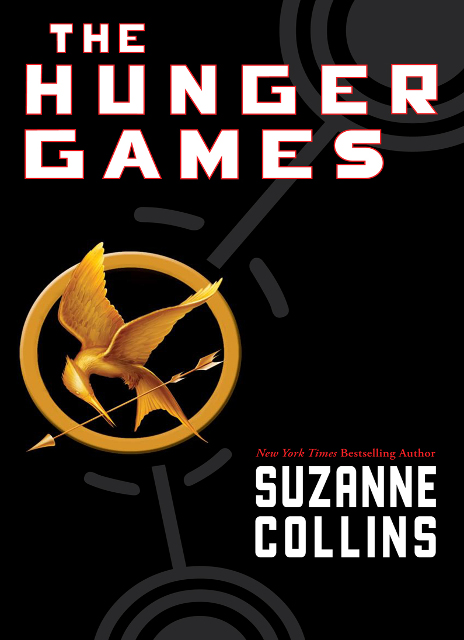

|  |
The Hunger GamesIn a dystopian future, the totalitarian nation of Panem is divided into 12 districts and the Capitol. Each year two young representatives from each district are selected by lottery to participate in The Hunger Games. Part entertainment, rutal retribution for a past rebellion, the televised games are broadcast throughout Panem. The 24 participants are forced to eliminate their competitors while the citizens of Panem are required to watch. When 16-year-old Katniss' young sister, Prim, is selected as District 12's female representative, Katniss volunteers to take her place. She and her male counterpart, Peeta, are pitted against bigger, stronger representatives, some of whom have trained for this their whole lives. |
The Hunger GamesIn a dystopian future, the totalitarian nation of Panem is divided into 12 districts and the Capitol. Each year two young representatives from each district are selected by lottery to participate in The Hunger Games. Part entertainment, rutal retribution for a past rebellion, the televised games are broadcast throughout Panem. The 24 participants are forced to eliminate their competitors while the citizens of Panem are required to watch. When 16-year-old Katniss' young sister, Prim, is selected as District 12's female representative, Katniss volunteers to take her place. She and her male counterpart, Peeta, are pitted against bigger, stronger representatives, some of whom have trained for this their whole lives. |
|
The Hunger GamesIn a dystopian future, the totalitarian nation of Panem is divided into 12 districts and the Capitol. Each year two young representatives from each district are selected by lottery to participate in The Hunger Games. Part entertainment, rutal retribution for a past rebellion, the televised games are broadcast throughout Panem. The 24 participants are forced to eliminate their competitors while the citizens of Panem are required to watch. When 16-year-old Katniss' young sister, Prim, is selected as District 12's female representative, Katniss volunteers to take her place. She and her male counterpart, Peeta, are pitted against bigger, stronger representatives, some of whom have trained for this their whole lives. |